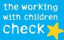

Verified Leaders
All leaders and volunteers hold a valid Working With Children Check (WWCC), complete a Safe Ministry Check, and undertake ChildSafe training.
Northern Beaches Christian Reformed Church is committed to welcoming children and their parents or carers and providing a child-safe environment, culture, and programs for children and other vulnerable people who attend our services and activities.
All children who come to Northern Beaches Christian Reformed Church have a right to feel and be safe. The welfare of children in our care will be our first priority. Authorised leaders accept the responsibility of providing a safe and friendly environment where children are listened to, feel safe, have fun, accept challenges, learn, and grow.
All leaders and volunteers hold a valid Working With Children Check (WWCC), complete a Safe Ministry Check, and undertake ChildSafe training.
All church programs and activities for children and young people are led and run in a safe, accountable, and age-appropriate manner.
Clear, transparent reporting procedures are in place for leaders, parents, and congregation members whenever a concern arises.
Download the signed Child Safe Church Policy document (May 2022) as a PDF.
